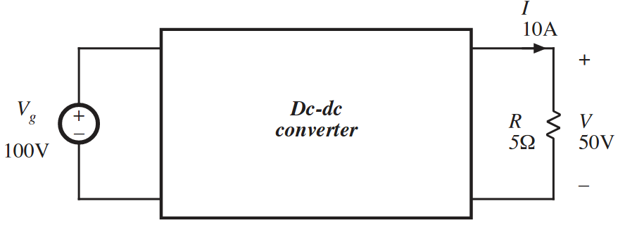
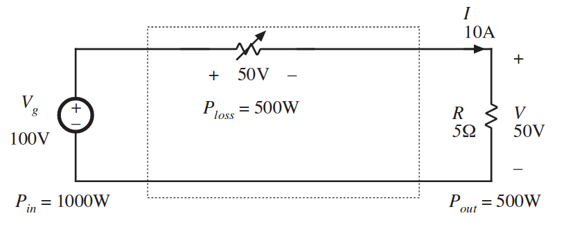
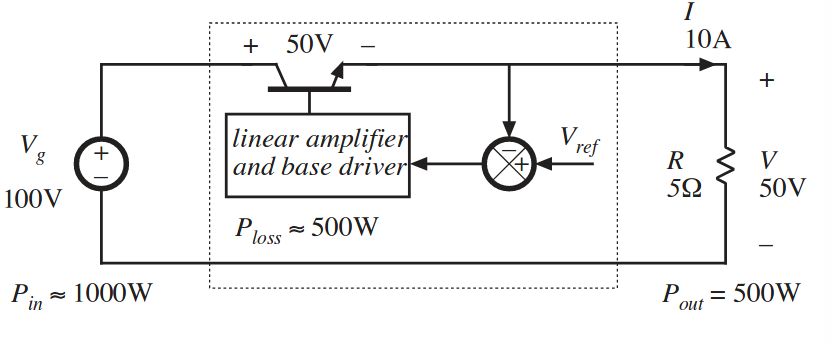
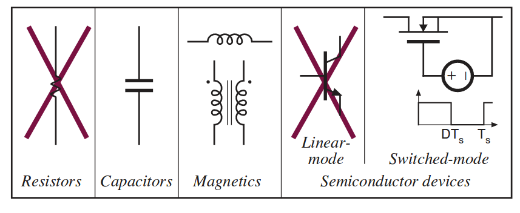
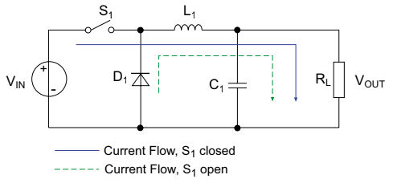
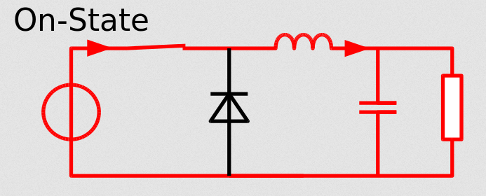
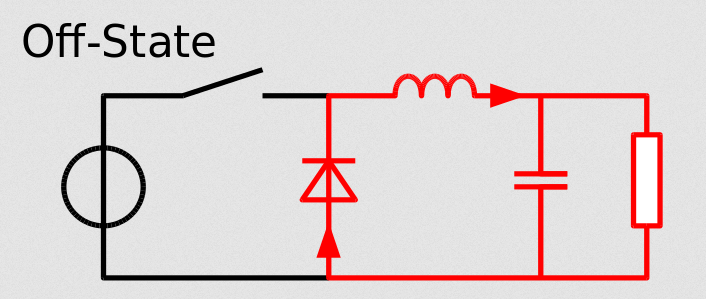

class: center, middle # EE-361 # Introduction to Step-down(Buck) Converter ## Ozan Keysan [ozan.keysan.me](http://ozan.keysan.me) Office: C-113 <span class="meta">•</span> Tel: 210 7586 --- # DC/DC Converters -- ## Can be used to: -- ## Step down the input voltage (Buck Converters) -- ## Step up the input voltage (Boost Converters) -- ## or both (Buck-boost Converters) --- ## Let's start with a simple Step down Converter --  ## Can you design this converter? --- ## Resistive Voltage Divider  --- # Series Regulator (Transistor in linear mode)  ### Efficiency= 50% ! --- ## Avoid lossy elements for high efficiency!  --- # DC/DC Converter Applications -- ## All Types of Power Supplies <img src="https://ae01.alicdn.com/kf/HTB1Ba.UJFXXXXbcXVXXq6xXFXXXk/DC-DC-Step-Down-Buck-Converter-Power-Supply-Module-24V-12V-9V-to-5V-5A-25W.jpg" alt="Drawing" style="width: 500px;"/> --- # Which components do you see? <img src="http://hi-z.com/wp-content/uploads/2016/08/DC-to-DC-Converter-TEG-MODULE.jpg" alt="Drawing" style="width: 600px;"/> --- # Which components do you see? <img src="https://images-na.ssl-images-amazon.com/images/I/51Ds0P5msZL._SX342_.jpg" alt="Drawing" style="width: 600px;"/> --- # Step-Down (Buck) Converter: ## Simplest Case <img src="./images/ee463/switch_mode_dc_dc.png" alt="Drawing" style="width: 450px;"/> --- # Step-Down (Buck) Converter: ## Simplest Case <img src="./images/ee463/switch_mode_dc_dc2.png" alt="Drawing" style="width: 700px;"/> --- # Let's make the output voltage smoother -- ## Add a Low Pass Filter (eg LC Filter) <img src="./images/ee463/step_down_low_pass.png" alt="Drawing" style="width: 700px;"/> ### [Buck Converter Simulation](https://www.multisim.com/content/9zdN2fmAxbMcsVv46Ap9KX/buck-converter/) --- ## Why do we have the diode for? <img src="./images/ee463/step_down_low_pass.png" alt="Drawing" style="width: 600px;"/> -- ## Freewheeling Diode: Conducts when switch is off --- ## Operating Modes of Buck Converter  --- ## Switch ON  --- ## Switch OFF  --- ## Operating Modes (in CCM) <img src="./images/ee463/buck_converter_voltages.png" alt="Drawing" style="width: 600px;"/> --- ## Voltage and Current Waveforms <img src="https://upload.wikimedia.org/wikipedia/commons/6/63/Buck_chronogram.png" alt="Drawing" style="width: 500px;"/> #### Assumptions: - #### Converter working under steady state (\\(I\_{L}(0)=I\_{L}(T)\\)) - #### Capacitor is large so that output voltage (\\(V\_{o}\\)) is constant --- ## Voltage Output Characteristics --- ## Step-Down (Buck) Converter: -- #\\(V_o = D V_d\\) -- ### Neglecting losses #\\(I_o = I_d/D\\) ### Like a DC transformer with a turns ratio of \\(D:1\\) ! --- ## You can download this presentation from: [keysan.me/ee361](http://keysan.me/ee361)